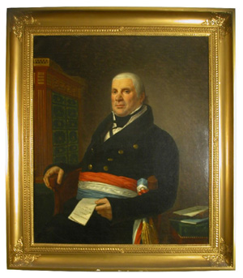
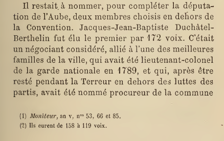
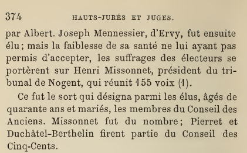
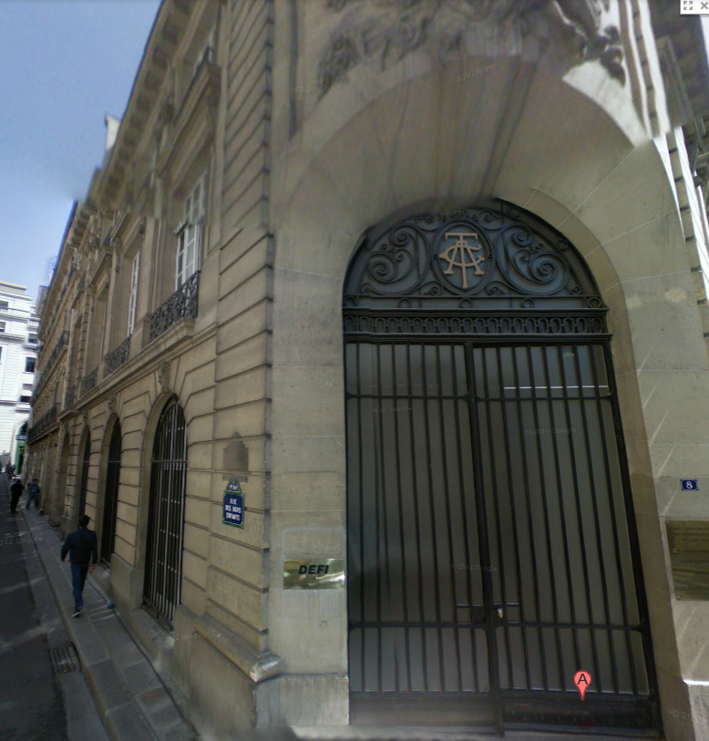
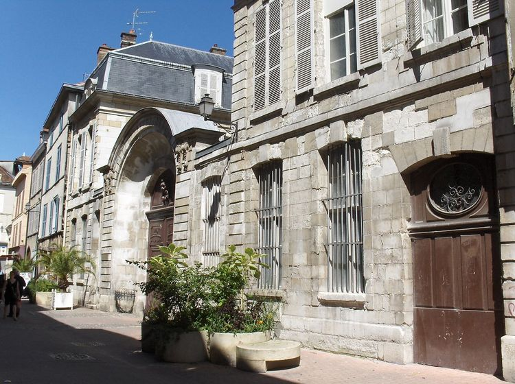
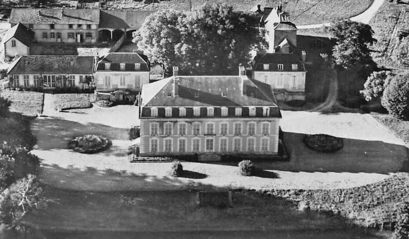
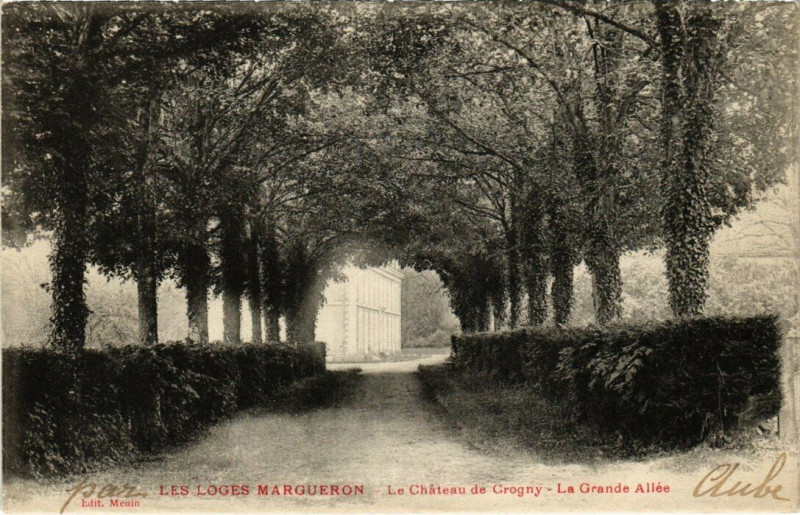
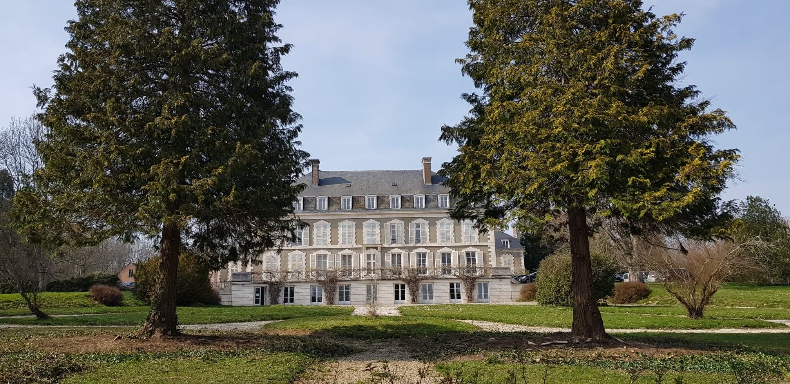
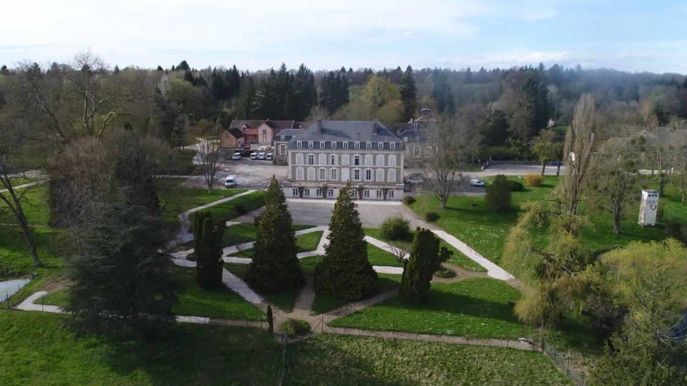

Fiche d’État Civil & Titres

Origines, Fortune Négociante & Acquisition d'Aumont
Jacques-Jean-Baptiste Duchastel naît le 16 juin 1756 à Reims (Marne). Il est le fils de Jean-Baptiste Duchastel de Montflambert (1723–1809), écuyer, conseiller et secrétaire du Roi — charge anoblissante qui installa durablement la famille dans la noblesse de robe —, et de Louise Nicolle Cadot (1736–1776). Le 30 juin 1778, il est marié en la chapelle du château de Rosières (Saint-André-les-Vergers, Aube) à Élisabeth Berthelin (1760–1806), fille d'Edme Berthelin et de Marie-Anne-Charlotte Watier. Issue d'un rang social élevé dans la haute bourgeoisie troyenne, cette alliance amène Jacques-Jean-Baptiste à adjoindre le nom de son épouse au sien, s'affirmant dès lors sous le patronyme de Duchastel-Berthelin.
Écuyer et conseiller secrétaire du Roi au Parlement de Provence sous l'Ancien Régime, il devient un très riche négociant établi à Troyes. Il s'impose rapidement comme le bourgeois négociant le plus imposé de la ville, versant jusqu'à 12 300 francs-or de contribution directe en 1803.
Le 21 juin 1793, en pleine période révolutionnaire, les époux Duchastel-Berthelin réalisent une acquisition foncière majeure : ils achètent pour 1,4 million de francs une vaste portion du domaine de la forêt d'Isle appartenant à Louis-Marie Guy d'Aumont (lieutenant général des armées républicaines et membre de la loge maçonnique Le Contrat Social). Cet achat colossale représentait 5 500 arpents (2 321 ha) et se décomposait ainsi :
- 3 218 arpents de bois dans la forêt d'Aumont (1 358 ha) ;
- Le domaine de Palluau (dont le Grand Palluau représente aujourd'hui 292 ha) ;
- Le domaine de La Courtançon ;
- Le domaine de Crogny ;
- Une maison bourgeoise, six étangs, quatre fermes, un moulin à grain et un moulin à tan.
Carrière Politique & Mandats Parlementaires
Lieutenant-colonel de la Garde nationale de Troyes dès 1789, Duchastel-Berthelin se tient prudemment à l'écart des luttes de partis pendant la Terreur avant d'être nommé procureur de la commune.
Le 22 vendémiaire an IV (14 octobre 1795), il est élu député de l'Aube au Conseil des Cinq-Cents par 172 voix sur 231 votants.


Au cours de son mandat aux Cinq-Cents, son activité parlementaire est particulièrement soutenue :
- 11 prairial an IV : Présentation d'une résolution relative au dépôt de la liste des émigrés.
- 10 vendémiaire an V : Dépôt d'un rapport de crédits pour la cathédrale de Chartres.
- 27 vendémiaire an V : Allocation de 50 000 F aux archives du Corps législatif.
- 3 brumaire an VI : Intervention sur la législation des biens nationaux.
- 21 pluviôse an VI : Demande d'une commission d'examen des marchés publics.
- 30 thermidor an VI : Demande de suspension de l'impression du rapport sur les finances du Directoire.
Sous la Révolution, ses résidences parisiennes témoignent de son assiduité aux séances du Corps législatif : pendant l'An IV (1795-1796), il loge au 8, rue des Bons-Enfants à Paris, puis durant l'An V (1796-1797), il réside rue Neuve des Capucins.

Après s'être tenu en retrait sous le Consulat et le Premier Empire, il réapparaît brièvement sur la scène politique en étant élu représentant à la Chambre des Cent-Jours pour l'Aube le 8 mai 1815 (69 voix sur 131). Cette éphémère législature marque la fin définitive de sa carrière publique.
Titre de Baron, Séjours Impériaux & Château de Crogny
Jacques-Jean-Baptiste Duchastel-Berthelin est créé baron de l'Empire à titre héréditaire en vertu d'un décret impérial de Napoléon Ier promulgué au Palais des Tuileries le 2 janvier 1814.
Sa résidence troyenne, un bel hôtel particulier situé au 11, rue du Temple (actuelle rue du Général-Saussier), devient le théâtre d'événements historiques majeurs pendant la Campagne de France de 1814 :

- Premier séjour impérial (3–5 février 1814) : Après le repli consécutif à la difficile bataille de La Rothière, Napoléon Ier établit son quartier général chez Duchastel-Berthelin. La chambre impériale au premier étage bénéficiait d'une issue secrète permettant la circulation discrète des émissaires et visiteurs.
- Occupation coalisée : Durant l'occupation temporaire de Troyes par les troupes alliées, le prince autrichien Karl Philipp de Schwarzenberg installe également son quartier général dans cet hôtel de la rue du Temple.
- Second séjour impérial (24–26 février 1814) : À la suite de la contre-offensive victorieuse de la campagne des Six-Jours et de Montereau, l'Empereur reprend Troyes et séjourne une seconde fois chez Duchastel-Berthelin.
En 1815, le baron Duchastel-Berthelin entreprend la construction du Château de Crogny aux Loges-Margueron pour la somme de 127 777 francs. Fait remarquable, le chantier employa une main-d'œuvre cosmopolite formée de prisonniers de guerre russes, bavarois, anglais ainsi que de Baskirs venus des confins de la Grande Muraille de Chine.




Descendance & Transmissibilité du Titre Baronnial
Famille Union & Descendance de Jacques-Jean-Baptiste Duchastel-Berthelin ›
De son union le 30 juin 1778 avec Élisabeth Berthelin (1760–1806), trois enfants sont nés, mais aucun n'a laissé de descendance directe survivante :
Descendance : Une fille unique, Ernestine Cadot (2 avril 1799 – 25 novembre 1807, Reims), morte en bas âge.
Transmission du titre baronnial : Étant mort le 21 février 1830 sans descendance directe survivante, son titre de Baron héréditaire réversible est revenu de droit à son neveu Alexandre-Louis-François Duchastel de Montrouge (1784–1863), fils aîné de son frère cadet Jacques-Gabriel Duchastel de Montrouge (1758–1792), mort prématurément.
Sources & Références Documentaires
- 1. Dictionnaire des parlementaires français de 1789 à 1889 (Adolphe Robert et Gaston Cougny).
- 2. Histoire de Troyes pendant la Révolution, Volume 2 (1873), Émile Babeau.
- 3. Fiche généalogique NosOrigines / OurOrigins (PID #437378).
- 4. Notice Wikipédia et article historique du Domaine de Crogny (
fr.wikipedia.org/wiki/Crogny). - 5. Documents d'archives sur les résidences parisiennes et troyennes du Corps législatif.